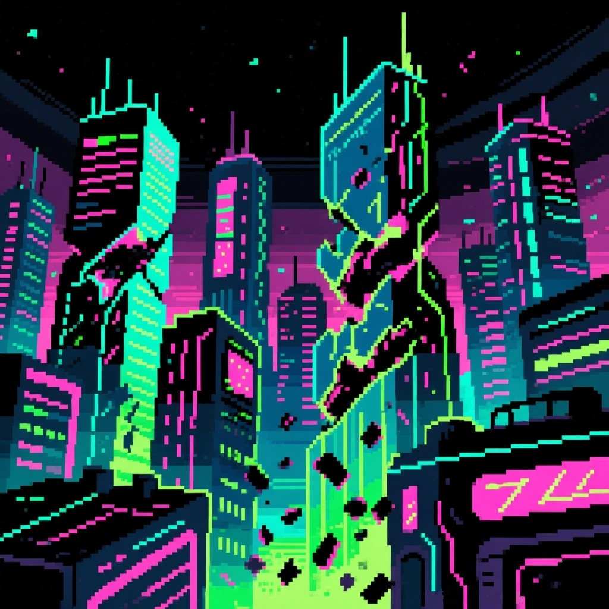
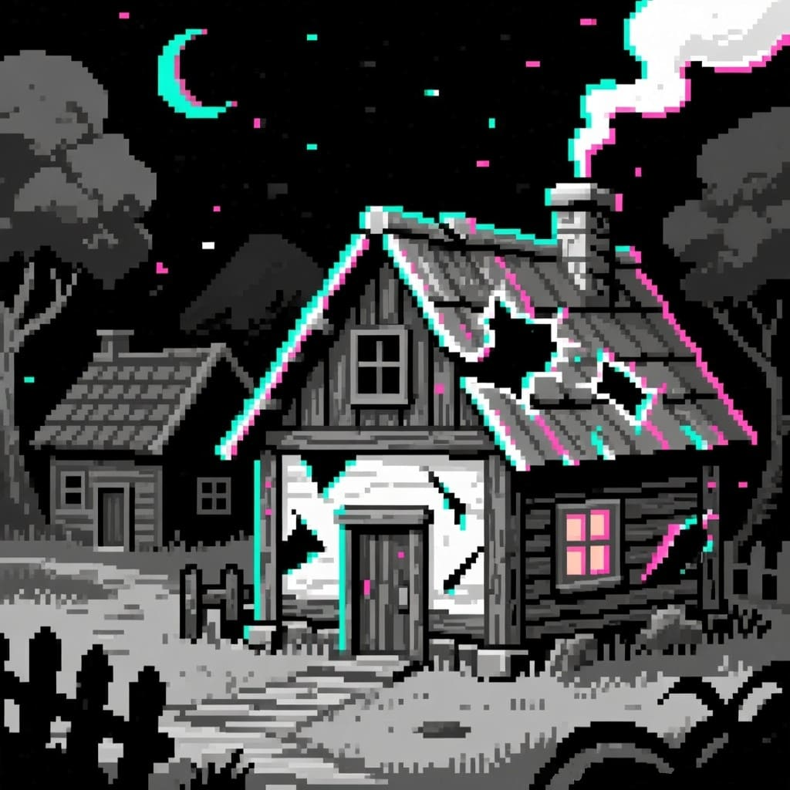
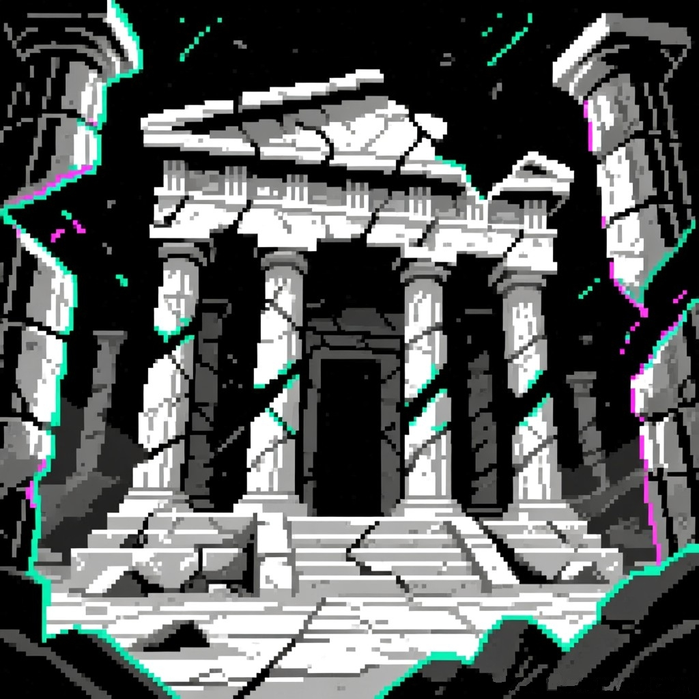
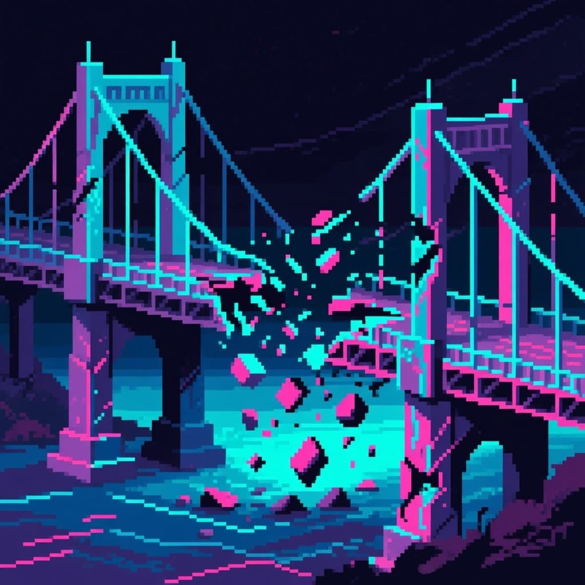
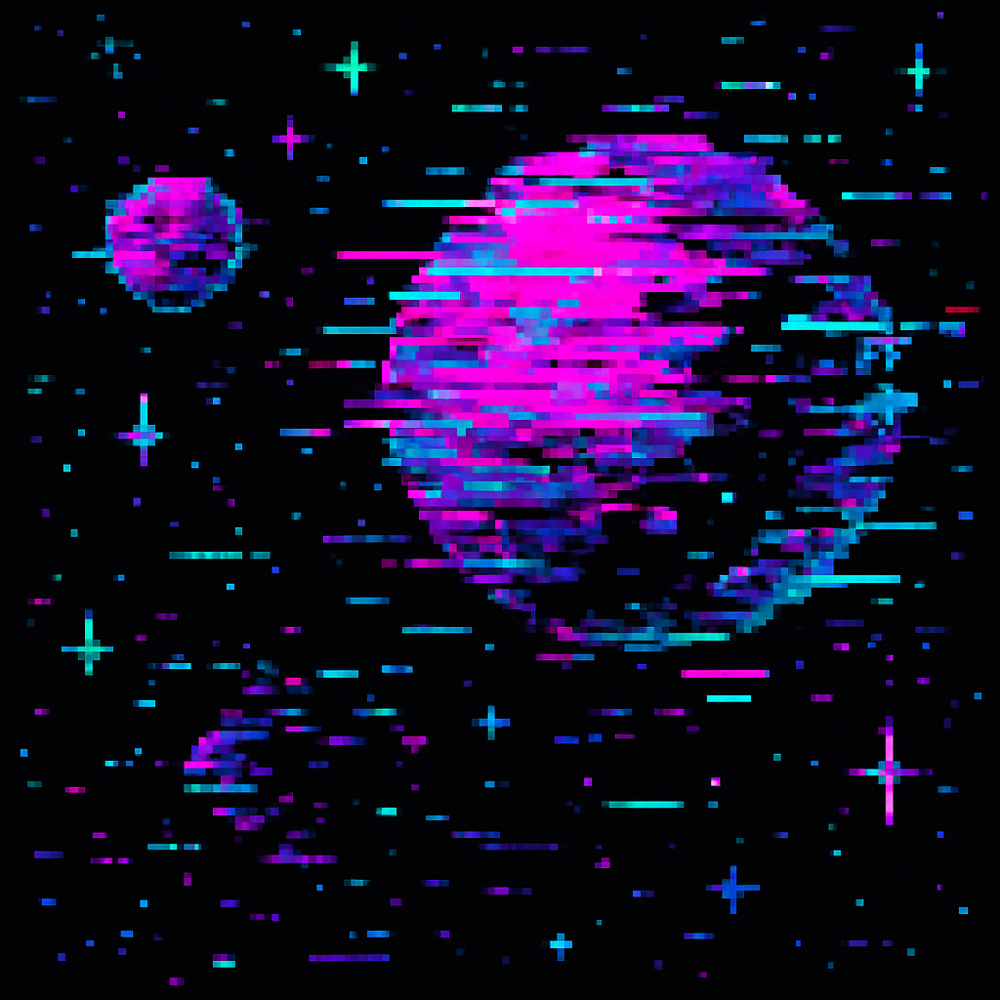
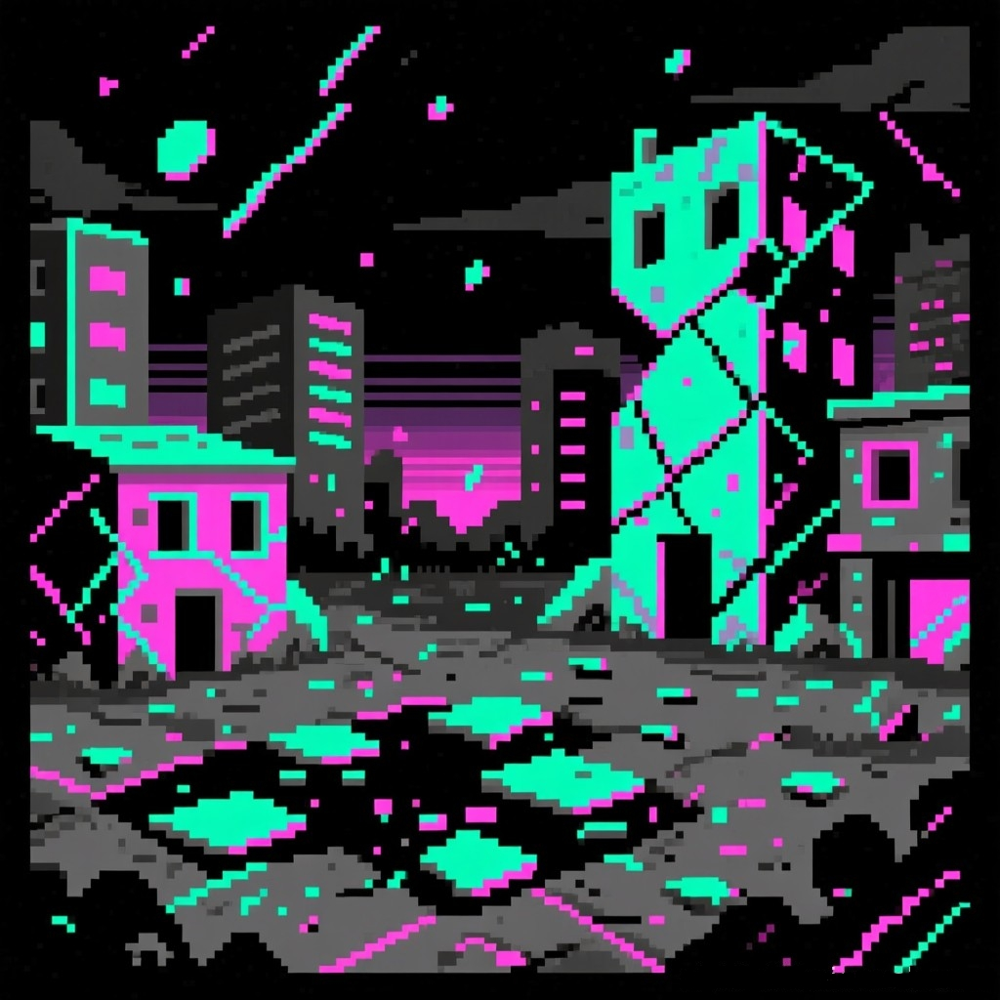
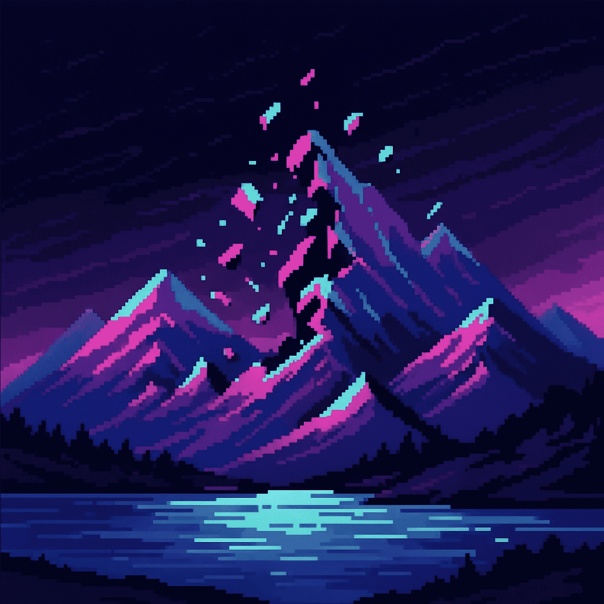
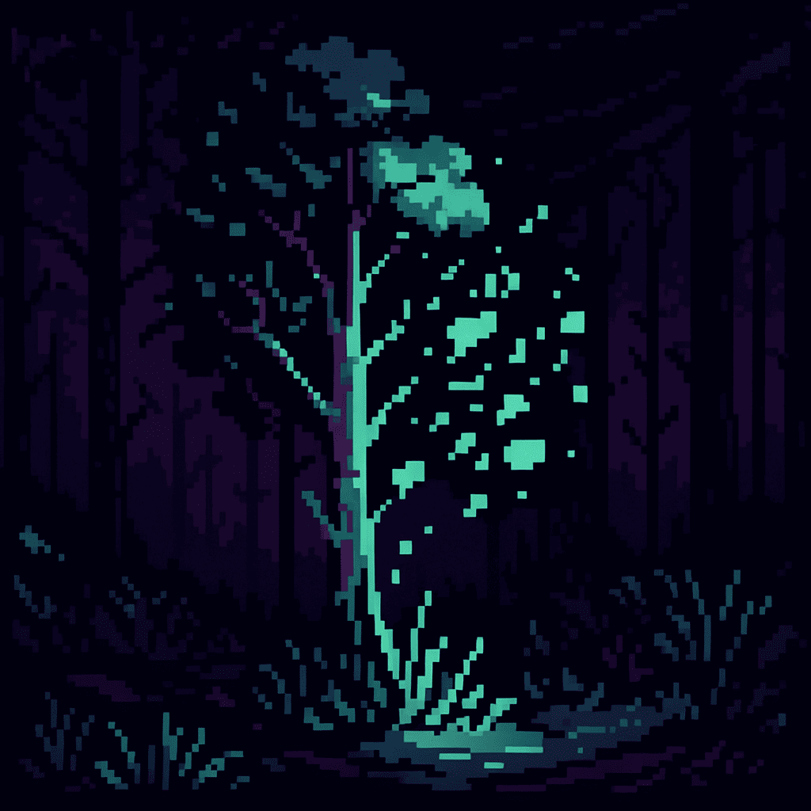
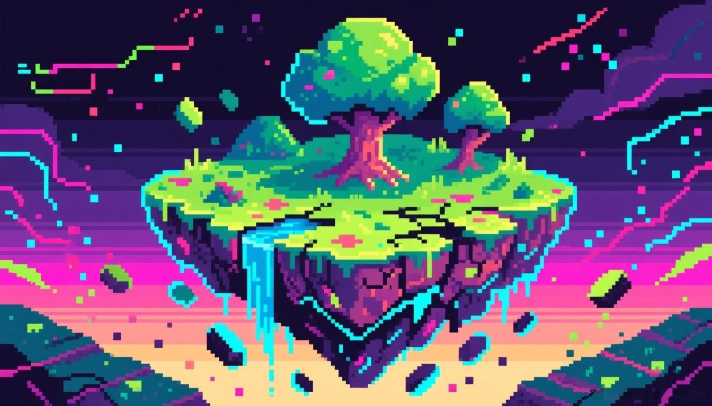
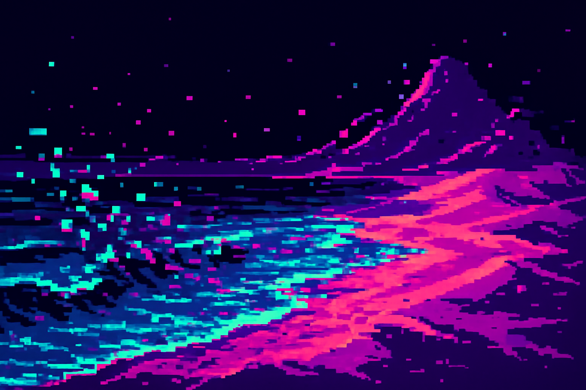

Ця галерея — колекція фрагментів «Багованого світу», де знайомі ландшафти і міські сцени проходять крізь фільтр цифрових збоїв. Тут шум, RGB-зсуви та «scanlines» не приховують реальність, а підкреслюють її структуру.
Переглядай зображення у довільному порядку — кожна сцена має власний тип «помилки» й окремий настрій.










Усі роботи виконано в єдиній глітч-естетиці з варіативними сюжетами: урбаністика, природа та «межові» простори.